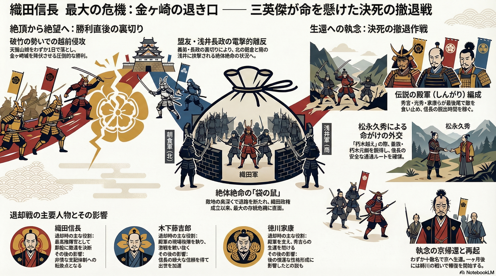

信長を襲った絶望的な包囲網と、それに対抗した三英傑の具体的な役割・影響に焦点を当てた詳細図解です。
● 絶体絶命の「袋の鼠」： 北の朝倉軍と南の浅井軍に挟まれ、退路を完全に断たれた織田軍の窮状を視覚化しています。敵地の奥深くで孤立した、政権成立以来最大の存亡危機を浮き彫りにしています。
● 三英傑の役割と戦後の影響：
・織田信長： 最高指揮官として即座に撤退を決断。この屈辱が後の非情な支配体制への転換点となりました。
・木下藤吉郎： 殿軍の現場指揮を執り、激戦を戦い抜くことで信長の絶大な信頼を獲得し、出世を加速させました。
・徳川家康： 殿軍を支え秀吉らの生還を助けました。この危機経験が、後の慎重な性格形成に影響したとされています。
● 再起への執念： わずか十数名での京帰還という屈辱を味わいながらも、わずか一ヶ月後には姉川の戦いで報復を開始した信長の強靭な再起力を示しています。
戦国史の主役たちがどのようにこの死線を越え、その後の天下取りへと繋げていったのかを構造的に理解できる資料となっています。